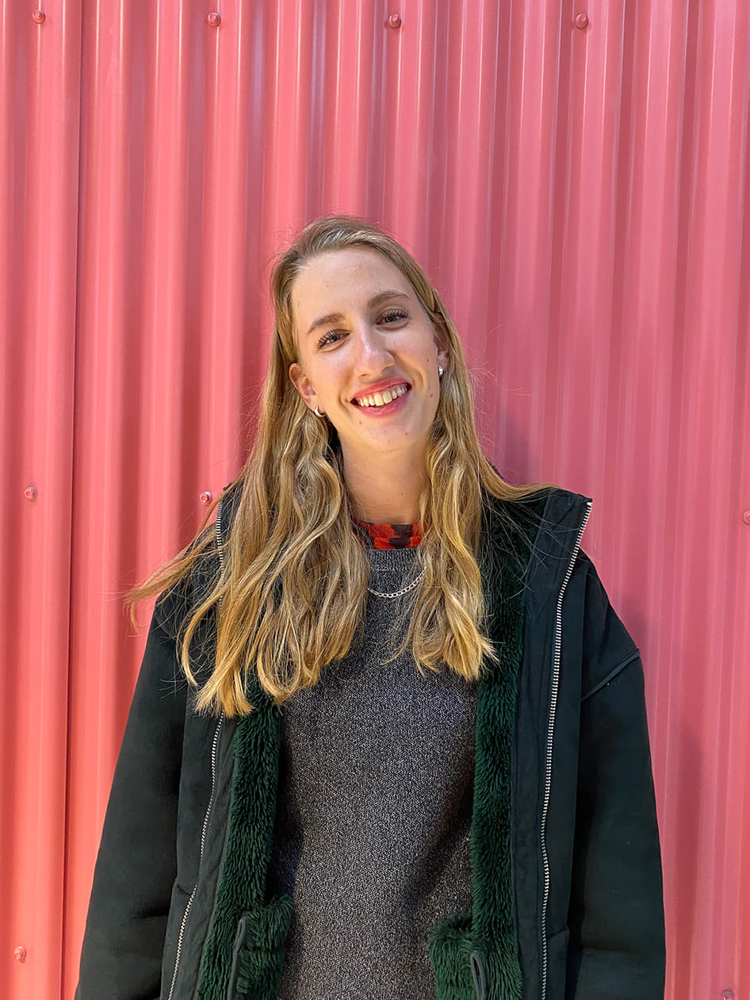

Om mig
Kreativitet med et formål er noget af det vigtigste for mig som multimediedesigner. Som multimediedesigner er min vision klar - at skabe design med et formål.
Jeg værdsætter banebrydende design. Jeg værdsætter klassisk design. Mest af alt værdsætter jeg den subjektivitet, der findes i forståelse af design. En subjektivitet, der føder kulturelle strømninger og belyser nye perspektiver - andre måder at forstå verden på.
Perspektiver jeg værdsætter mere end nogensinde. I en tid, hvor man ikke kan rejse ud og finde inspiration i andre dele af verden, må man nøjes med den inspiration, der kan ligge lige ved fingerspidserne. Et sandt privilegium.